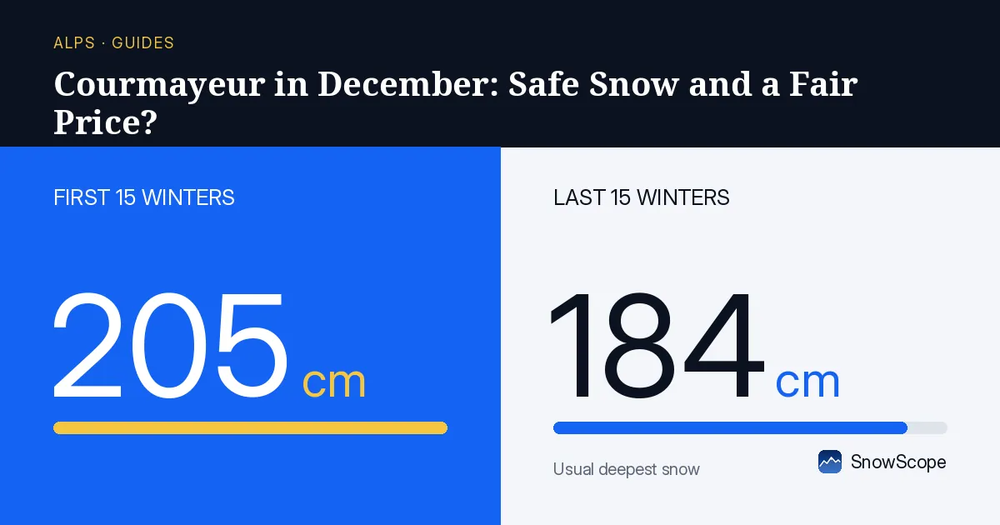

Courmayeur in December: Safe Snow and a Fair Price?
For a cautious first-timer planning a December ski trip, Courmayeur in Italy has reliable snow from mid-mountain up, though the pass is not cheap. An adult 6-day pass for winter 2026-27 costs 396.00 EUR on the official site, and snow at 1976 m reaches 30 cm or more in 98 % of past winters by 15-21 December.
See the live snow forecast for Courmayeur in the SnowScope appSnow depth, powder alerts and the 3D map, free.
Big Name, Cautious Budget
Picking a famous resort for a first Alpine trip in December feels risky on a budget. Nobody wants to pay up and see thin snow, so I checked Courmayeur against our snow history of 46 past winters (1980-81 to 2025-26) and official pass rates.
The mapped ski area runs from 1204 m to 2749 m (1545 m vertical), with 42 km of mapped runs and 24 mapped lifts. That compact layout suits a cautious beginner.

Snow Odds from Base to Summit
At the 1204 m base, December starts thin. Usual December depth is 38 cm, and 38 cm on 15 December (1 thin winter in 10 below 12 cm, 1 deep winter above 84 cm). In 1-7 December, 35 % of past winters reach 30 cm or more and 9 % reach 50 cm or more, rising to 57 % and 28 % in 8-14 December, 72 % and 50 % in 15-21 December, and 83 % and 57 % in 22-28 December.
At 1976 m mid-mountain, cover is safer. Usual December depth is 60 cm, and 66 cm on 15 December (1 thin winter in 10 below 28 cm, 1 deep winter above 120 cm). In 1-7 December, 70 % of past winters hold 30 cm or more and 35 % hold 50 cm or more, rising to 87 % and 54 % in 8-14 December, 98 % and 70 % in 15-21 December, and 100 % and 80 % in 22-28 December.
At the 2749 m top, snow is reliable all month. Usual December depth is 127 cm, and 131 cm on 15 December (1 thin winter in 10 below 60 cm, 1 deep winter above 225 cm). Even in 1-7 December, 98 % of past winters hit 30 cm or more and 87 % hit 50 cm or more, reaching 100 % for 30 cm from 8-14 December onward and 100 % for 50 cm from 15-21 December.
Official Pass Prices for Winter 2026-27
On the official site for winter 2026-27, an adult 1-day Courmayeur pass at the ticket-office rate costs 75.00 EUR. An adult 6-day Courmayeur pass is 396.00 EUR, including one day at Skyway Monte Bianco or another Aosta Valley resort. Knowing that 396.00 EUR lift cost helps plan a budget, though other trip costs were not checked.
Courmayeur or La Thuile in December
La Thuile spans France and Italy with 79 km of mapped runs and 17 mapped lifts from 1468 m to 2608 m (1140 m vertical). No price was checked on the official site for La Thuile. Its 1468 m base averages 44 cm in December and 45 cm on 15 December (1 thin winter in 10 below 17 cm, 1 deep winter above 92 cm), reaching 30 cm or more in 48 % of past winters in 1-7 December and 87 % in 22-28 December.
At 2038 m mid-mountain, La Thuile averages 67 cm in December and 70 cm on 15 December, with 50 cm or more rising from 43 % in 1-7 December to 87 % in 22-28 December. Its 2608 m top averages 98 cm in December and 97 cm on 15 December. La Thuile has more mapped runs and deeper base snow, while Courmayeur climbs higher.
Early Snow, Recent Winters, and November 2026
Lasting snow at Courmayeur usually starts on 27 September at the top, 8 October at mid-mountain, and 18 October at the base, peaking at 344 cm, 192 cm, and 124 cm. Extremes happen: December averages ran from 7 cm (2014-15) to 102 cm (1981-82) at the base, and 55 cm (2020-21) to 237 cm (1982-83) at the top.
From our first 15 winters (1980-81 to 1994-95) to our last 15 (2011-12 to 2025-26), December averages fell from 47 cm to 42 cm at the base, yet rose from 63 cm to 69 cm at mid-mountain and 127 cm to 133 cm at the top. Last winter (2025-26) averaged 34 cm, 61 cm, and 134 cm.
To show how this season is starting, today's snow estimate on 13 November 2026 is 0 cm at the base and mid-mountain and 17 cm at the top, with 8 cm, 68 cm, and 109 cm expected over 7 days. For mid-mountain and above, the two-week outlook gives a forecast range of 84 cm to 128 cm.
Tips for skiers
- Target 15-21 December or 22-28 December, when mid-mountain reaches 30 cm or more in 98 % to 100 % of past winters.
- Ski at 1976 m and up to 2749 m in early December, as the 1204 m base hits 50 cm or more in only 9 % of past winters in 1-7 December.
- Book the 6-day pass at 396.00 EUR on the official site rather than paying the 75.00 EUR ticket-office day rate repeatedly.
- Check the local avalanche bulletin before any off-piste skiing.
More maps (external sites)
References and credits
- Courmayeur Mont Blanc, official daily ski pass prices 2026-27 www.courmayeur-montblanc.com/skipass-e-tariffe/tariffe-giornaliere/
- SnowScope, December snow at three heights and today's snow map snowscope.app/
About these numbers
Snow numbers: SnowScope snow history, 46 past winters (1980-81 to 2025-26) at three heights of each resort (a model of the past corrected for height: an estimate for an area, not resort measurements); December figures computed from the daily depths of those winters. Snow now and the two-week outlook: SnowScope forecasts (outlook from ECMWF and GFS, a range, not a promise). Lifts and runs: OpenSkiMap mapping. Prices: the official resort pages listed below, read on 2026-11-13; prices can change, check before booking.
Official avalanche bulletins: AINEVA – Associazione Interregionale Neve e Valanghe
Cite this report
For research, teaching or the press: the numbers and charts are free to reuse under CC BY 4.0 with this citation.
SnowScope (2026), Courmayeur in December: Safe Snow and a Fair Price?, https://snowscope.app/blog/en/2026/11/courmayeur-december-ski-snow-cost-mont-blanc-2026.html, accessed 2026-11-14
SnowScope (Atlas Labs). (2026, November 14). Courmayeur in December: Safe Snow and a Fair Price?. SnowScope snow reports. https://snowscope.app/blog/en/2026/11/courmayeur-december-ski-snow-cost-mont-blanc-2026.html
BibTeX
@misc{snowscope2026courmayeurdecemberskisno,
author = {{SnowScope (Atlas Labs)}},
title = {Courmayeur in December: Safe Snow and a Fair Price?},
year = {2026},
month = nov,
howpublished = {\url{https://snowscope.app/blog/en/2026/11/courmayeur-december-ski-snow-cost-mont-blanc-2026.html}},
note = {Published 2026-11-14 13:01 UTC; accessed 2026-11-14}
}· CC BY 4.0 · Methods, data and tools →
Courmayeur: snow and temperature by height, this winter vs last (tools) →
Follow Courmayeur
Free: a message when fresh snow is coming, and the forecast every morning.
More snow reports

Saint François Longchamp sits at just 3 cm of snow, 12% of usual depth for this time, but 110 cm is forecast in the next two weeks.

Terenten has 73 cm on upper slopes as of 4 November; freezing level will reach 2970 m on 5 November, bringing rain to the summit at 1381 m.

Dent de Vaulion's upper slopes face rain as freezing level reaches 2800 m Thursday; higher resorts get fresh snow for the weekend.